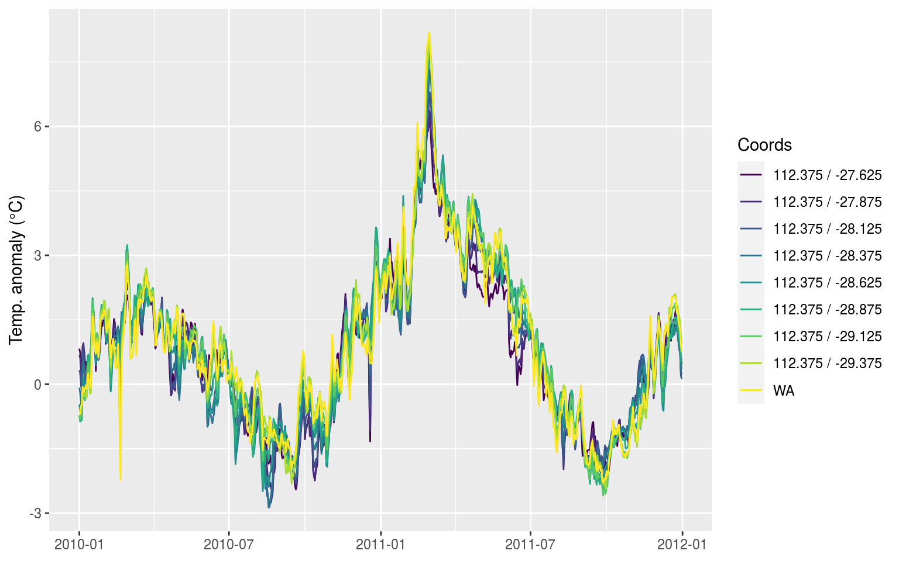
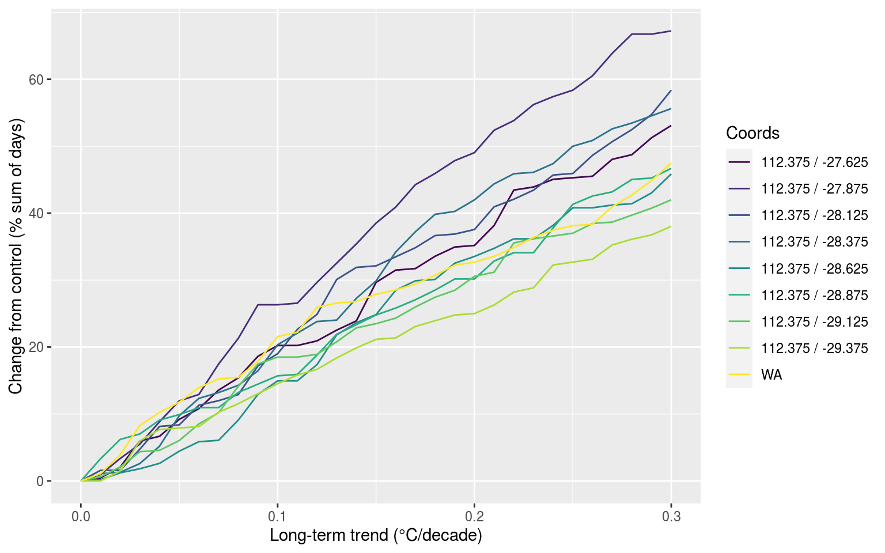
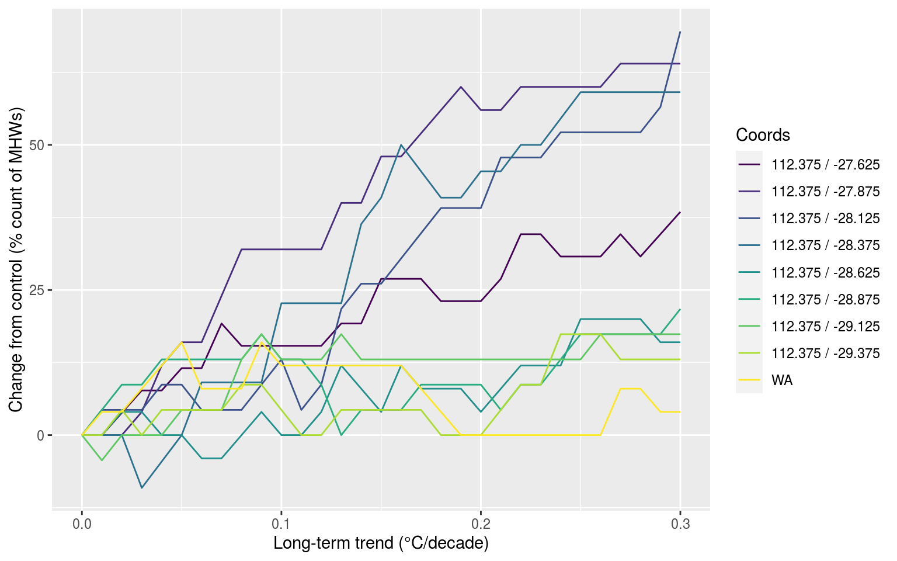

Last updated: 2019-11-06
workflowr checks: (Click a bullet for more information) ✔ R Markdown file: up-to-date
Great! Since the R Markdown file has been committed to the Git repository, you know the exact version of the code that produced these results.
✔ Environment: empty
Great job! The global environment was empty. Objects defined in the global environment can affect the analysis in your R Markdown file in unknown ways. For reproduciblity it’s best to always run the code in an empty environment.
✔ Seed:
set.seed(666)
The command set.seed(666) was run prior to running the code in the R Markdown file. Setting a seed ensures that any results that rely on randomness, e.g. subsampling or permutations, are reproducible.
✔ Session information: recorded
Great job! Recording the operating system, R version, and package versions is critical for reproducibility.
✔ Repository version: ff0bb95
wflow_publish or wflow_git_commit). workflowr only checks the R Markdown file, but you know if there are other scripts or data files that it depends on. Below is the status of the Git repository when the results were generated:
Ignored files:
Ignored: .Rhistory
Ignored: .Rproj.user/
Ignored: data/global/
Ignored: data/global_results.Rda
Ignored: data/global_test_trend.Rda
Ignored: data/global_var_trend.Rda
Ignored: data/global_var_trend_old.Rda
Ignored: data/random_bp_results_100.Rda
Ignored: data/random_bp_results_1000.Rda
Ignored: data/random_results_100.Rda
Ignored: data/random_results_1000.Rda
Ignored: data/sst_ALL_bp_results.Rda
Untracked files:
Untracked: analysis/WA_pixels.Rda
Untracked: analysis/WA_pixels_res.Rda
Untracked: docs/figure/missing_data.Rmd/
Untracked: docs/figure/time_series_length.Rmd/
Untracked: docs/figure/trend.Rmd/
Unstaged changes:
Modified: .DS_Store
Modified: .Rprofile
Modified: .gitignore
Modified: CODE_OF_CONDUCT.md
Modified: LICENSE
Modified: LICENSE.md
Modified: LaTeX/FMars.csl
Modified: LaTeX/Frontiers_Template.docx
Modified: LaTeX/MHWdetection.docx
Modified: LaTeX/MHWdetection.tex
Modified: LaTeX/PDF examples/frontiers.pdf
Modified: LaTeX/PDF examples/frontiers_SupplementaryMaterial.pdf
Modified: LaTeX/README
Modified: LaTeX/Supplementary_Material.docx
Modified: LaTeX/YM-logo.eps
Modified: LaTeX/fig_1.jpg
Modified: LaTeX/fig_1.pdf
Modified: LaTeX/fig_1_flat.jpg
Modified: LaTeX/fig_1_flat.pdf
Modified: LaTeX/fig_2.jpg
Modified: LaTeX/fig_2.pdf
Modified: LaTeX/fig_3.jpg
Modified: LaTeX/fig_3.pdf
Modified: LaTeX/fig_4.jpg
Modified: LaTeX/fig_4.pdf
Modified: LaTeX/fig_5.jpg
Modified: LaTeX/fig_5.pdf
Modified: LaTeX/fig_6.jpg
Modified: LaTeX/fig_6.pdf
Modified: LaTeX/fig_S1.jpg
Modified: LaTeX/fig_S1.pdf
Modified: LaTeX/fig_S2.jpg
Modified: LaTeX/fig_S2.pdf
Modified: LaTeX/fig_S3.jpg
Modified: LaTeX/fig_S3.pdf
Modified: LaTeX/fig_S4.jpg
Modified: LaTeX/fig_S4.pdf
Modified: LaTeX/fig_S5.jpg
Modified: LaTeX/fig_S5.pdf
Modified: LaTeX/figures.zip
Modified: LaTeX/frontiers.tex
Modified: LaTeX/frontiersFPHY.cls
Modified: LaTeX/frontiersHLTH.cls
Modified: LaTeX/frontiersSCNS.cls
Modified: LaTeX/frontiersSCNS.log
Modified: LaTeX/frontiers_SupplementaryMaterial.tex
Modified: LaTeX/frontiers_suppmat.cls
Modified: LaTeX/frontiersinHLTH&FPHY.bst
Modified: LaTeX/frontiersinSCNS_ENG_HUMS.bst
Modified: LaTeX/logo1.eps
Modified: LaTeX/logo1.jpg
Modified: LaTeX/logo2.eps
Modified: LaTeX/logos.eps
Modified: LaTeX/logos.jpg
Modified: LaTeX/stfloats.sty
Modified: LaTeX/table_1.xlsx
Modified: LaTeX/table_2.xlsx
Modified: LaTeX/test.bib
Modified: MHWdetection.Rproj
Modified: TODO
Modified: _references/1-s2.0-S0921818106002736-main.pdf
Modified: _references/1-s2.0-S092181810600275X-main.pdf
Modified: _references/1-s2.0-S0921818106002761-main.pdf
Modified: _references/1-s2.0-S0921818106002852-main.pdf
Modified: _references/1405.3904.pdf
Modified: _references/1520-0450%282001%29040%3C0762%3Aotdoah%3E2.0.co%3B2.pdf
Modified: _references/2013_Extremes_Workshop_Report.pdf
Modified: _references/24868781.pdf
Modified: _references/24870362.pdf
Modified: _references/26192647.pdf
Modified: _references/994.full.pdf
Modified: _references/A_1019841717369.pdf
Modified: _references/Banzon et al 2014.pdf
Modified: _references/Brown_et_al-2008-Journal_of_Geophysical_Research%3A_Atmospheres_%281984-2012%29.pdf
Modified: _references/Different_ways_to_compute_temperature_re.pdf
Modified: _references/Gilleland et al 2013.pdf
Modified: _references/Gilleland_2006.pdf
Modified: _references/Kuglitsch_et_al-2010-Geophysical_Research_Letters.pdf
Modified: _references/Modeling Waves of Extreme Temperature The Changing Tails of Four Cities.pdf
Modified: _references/Normals-Guide-to-Climate-190116_en.pdf
Modified: _references/Reynolds et al 2007.pdf
Modified: _references/Risk_of_Extreme_Events_Under_Nonstationa.pdf
Modified: _references/Russo_et_al-2014-Journal_of_Geophysical_Research%3A_Atmospheres.pdf
Modified: _references/WCDMP_72_TD_1500_en__1.pdf
Modified: _references/WMO 49 v1 2015.pdf
Modified: _references/WMO No 1203.pdf
Modified: _references/WMO-TD No 1377.pdf
Modified: _references/WMO_100_en.pdf
Modified: _references/bams-d-12-00066.1.pdf
Modified: _references/c058p193.pdf
Modified: _references/cc100.pdf
Modified: _references/clivar14.pdf
Modified: _references/coles1994.pdf
Modified: _references/ecology.pdf
Modified: _references/joc.1141.pdf
Modified: _references/joc.1432.pdf
Modified: _references/returnPeriod.pdf
Modified: _references/s00382-014-2287-1.pdf
Modified: _references/s00382-014-2345-8.pdf
Modified: _references/s00382-015-2638-6.pdf
Modified: _references/s10584-006-9116-4.pdf
Modified: _references/s10584-007-9392-7.pdf
Modified: _references/s10584-010-9944-0.pdf
Modified: _references/s10584-012-0659-2.pdf
Modified: _references/s10584-014-1254-5.pdf
Modified: _references/s13253-013-0161-y.pdf
Modified: _references/wcrpextr.pdf
Modified: _workflowr.yml
Modified: analysis/Climatologies_and_baselines.Rmd
Modified: analysis/Short_climatologies.Rmd
Modified: analysis/about.Rmd
Modified: analysis/bibliography.bib
Modified: analysis/gridded_products.Rmd
Modified: analysis/r_vs_python_arguments.Rmd
Modified: analysis/variance.Rmd
Modified: code/README.md
Modified: data/.gitignore
Modified: data/best_table_average.Rda
Modified: data/best_table_focus.Rda
Modified: data/python/clim_py.csv
Modified: data/python/clim_py_joinAG_1.csv
Modified: data/python/clim_py_joinAG_5.csv
Modified: data/python/clim_py_joinAG_no.csv
Modified: data/python/clim_py_minD_3.csv
Modified: data/python/clim_py_minD_7.csv
Modified: data/python/clim_py_pctile_80.csv
Modified: data/python/clim_py_pctile_95.csv
Modified: data/python/clim_py_pctile_99.csv
Modified: data/python/clim_py_random.csv
Modified: data/python/clim_py_spw_11.csv
Modified: data/python/clim_py_spw_51.csv
Modified: data/python/clim_py_spw_no.csv
Modified: data/python/clim_py_whw_3.csv
Modified: data/python/clim_py_whw_7.csv
Modified: data/python/mhwBlock.csv
Modified: data/python/mhws_py.csv
Modified: data/python/mhws_py_joinAG_1.csv
Modified: data/python/mhws_py_joinAG_5.csv
Modified: data/python/mhws_py_joinAG_no.csv
Modified: data/python/mhws_py_minD_3.csv
Modified: data/python/mhws_py_minD_7.csv
Modified: data/python/mhws_py_pctile_80.csv
Modified: data/python/mhws_py_pctile_95.csv
Modified: data/python/mhws_py_pctile_99.csv
Modified: data/python/mhws_py_random.csv
Modified: data/python/mhws_py_spw_11.csv
Modified: data/python/mhws_py_spw_51.csv
Modified: data/python/mhws_py_spw_no.csv
Modified: data/python/mhws_py_whw_3.csv
Modified: data/python/mhws_py_whw_7.csv
Modified: data/python/sst_WA.csv
Modified: data/python/sst_WA_miss_ice.csv
Modified: data/python/sst_WA_miss_random.csv
Modified: data/sst_ALL_results.Rda
Modified: data/table_1.csv
Modified: data/table_2.csv
Modified: docs/portrait.pdf
Modified: output/README.md
Modified: output/effect_event.pdf
Modified: output/fig_2_missing_only.pdf
Modified: output/stitch_plot_WA.pdf
Modified: output/stitch_sub_plot_WA.pdf
Modified: poster/Figures/CSIRO_logo.jpeg
Modified: poster/Figures/Dal_logo.jpg
Modified: poster/Figures/all_logo_long.jpg
Modified: poster/Figures/all_logos.jpg
Modified: poster/Figures/logo_stitching.odp
Modified: poster/Figures/ofi_logo.jpg
Modified: poster/Figures/uwc-logo.jpg
Modified: poster/MHWdetection.bib
Modified: poster/MyBib.bib
Modified: poster/landscape.Rmd
Modified: poster/landscape.pdf
Modified: poster/portrait.Rmd
Modified: poster/portrait.pdf
| File | Version | Author | Date | Message |
|---|---|---|---|---|
| Rmd | ff0bb95 | robwschlegel | 2019-11-06 | Publish the sub-optimal test vignettes |
| Rmd | 448fff3 | Robert William Schlegel | 2019-11-04 | Beginning to tackle the main vignettes |
| Rmd | 158aa0b | robwschlegel | 2019-05-06 | Updated project interface |
| html | 158aa0b | robwschlegel | 2019-05-06 | Updated project interface |
| html | 38559da | robwschlegel | 2019-03-19 | Build site. |
| Rmd | 970b22c | robwschlegel | 2019-03-19 | Publish the vignettes from when this was a pkgdown framework |
| html | fa7fd57 | robwschlegel | 2019-03-19 | Build site. |
| Rmd | 64ac134 | robwschlegel | 2019-03-19 | Publish analysis files |
In this vignette are individual sections that show some of the closer looks performed on the results to ensure that they were behaving as expected.
# The packages used in this analysis
library(tidyverse)
library(heatwaveR)
library(lubridate)
library(ncdf4)
library(doParallel)
# The custom functions written for the analysis
source("code/functions.R")# We'll use the WA time series and the pixel just adjacent to it
sst_WA_flat <- detrend(sst_WA) %>%
mutate(site = "WA") %>%
select(site, t, temp)
# Find the correct longitude slice of data and load a several pixel transect into the eye of the MHW
# which(c(seq(0.125, 179.875, by = 0.25), seq(-179.875, -0.125, by = 0.25)) == 112.375)
sst_flat <- load_noice_OISST(OISST_files[450]) %>%
filter(lat > -29.5, lat < -27.5) %>%
unite(lon, lat, col = "site", sep = " / ") %>%
group_by(site) %>%
group_modify(~detrend(.x)) %>%
data.frame()
# Bing it to the reference time series
sst_ALL <- rbind(sst_flat, sst_WA_flat)
# unique(sst_ALL$site)Plot all time series together:
sst_ALL %>%
filter(t >= "2010-01-01", t <= "2011-12-31") %>%
ggplot(aes(x = t, y = temp)) +
geom_line(aes(group = site, colour = site)) +
scale_colour_viridis_d() +
labs(y = "Temp. anomaly (°C)", x = NULL, colour = "Coords")
Run full analyses on the pixels visualised above:
result_ALL <- plyr::ddply(sst_ALL, c("site"), single_analysis, full_seq = T, .parallel = T)Plot the results:
result_ALL %>%
filter(test == "trend", var == "duration", id == "sum_perc") %>%
ggplot(aes(x = index_vals, y = val)) +
geom_line(aes(group = site, colour = site)) +
scale_colour_viridis_d() +
labs(x = "Long-term trend (°C/decade)", y = "Change from control (% sum of days)", colour = "Coords")
In the figure above we may see that the closer we appraoch the centre of the WA MHW the less of an effect the increasing decadal trend is having on the overall number of MHWs detected. We may deduce that this is because the WA MHW was so intense that it is raising up the 90th percentile so high that even with added decadal warming it is not enough to increase the other MHWs. Now we want to look at how the count of overall events are affected:
result_ALL %>%
filter(test == "trend", var == "count", id == "n_perc") %>%
ggplot(aes(x = index_vals, y = val)) +
geom_line(aes(group = site, colour = site)) +
scale_colour_viridis_d() +
labs(x = "Long-term trend (°C/decade)", y = "Change from control (% count of MHWs)", colour = "Coords")
And there you have it, the reference time series are just super wacky, the results are otherwise as expected.
# -112.125 -28.875 # A pixel negatively affected by window widening
# which(c(seq(0.125, 179.875, by = 0.25), seq(-179.875, -0.125, by = 0.25)) == -112.125)
sst <- load_noice_OISST(OISST_files[992]) %>%
filter(lat == -28.875)
# Detrend the selected ts
sst_flat <- detrend(sst)
# Calculate MHWs from detrended ts
sst_flat_MHW <- detect_event(ts2clm(sst_flat, climatologyPeriod = c("1982-01-01", "2018-12-31")))
# Pull out the largest event in the ts
focus_event <- sst_flat_MHW$event %>%
filter(date_start >= "2009-01-01") %>%
filter(intensity_cumulative == max(intensity_cumulative)) %>%
select(event_no, date_start:date_end, duration, intensity_cumulative, intensity_max) %>%
mutate(intensity_cumulative = round(intensity_cumulative, 2),
intensity_max = round(intensity_max, 2))
# Quickly visualise the largest heatwave in the last 10 years of data
heatwaveR::event_line(sst_flat_MHW, start_date = "2009-01-01", metric = "intensity_cumulative")
# Normal window width
window_5_MHW <- detect_event(ts2clm(sst_flat, climatologyPeriod = c("1982-01-01", "2018-12-31")))
heatwaveR::event_line(window_5_MHW, start_date = "2009-01-01", metric = "intensity_cumulative")
# 10 day window
# Already here we see why the event falls away
# The focus MHW was just staying above the down slope of the seasonal dive into winter
# When the window half width is expanded the seasonal decline becomes less steep and the
# observed temperature is no longer above the 90th percentile
window_10_MHW <- detect_event(ts2clm(sst_flat, climatologyPeriod = c("1982-01-01", "2018-12-31"), windowHalfWidth = 10))
heatwaveR::event_line(window_10_MHW, start_date = "2009-01-01", metric = "intensity_cumulative")
# 20 day window
window_20_MHW <- detect_event(ts2clm(sst_flat, climatologyPeriod = c("1982-01-01", "2018-12-31"), windowHalfWidth = 20))
heatwaveR::event_line(window_20_MHW, start_date = "2009-01-01", metric = "intensity_cumulative")
# 30 day window
window_30_MHW <- detect_event(ts2clm(sst_flat, climatologyPeriod = c("1982-01-01", "2018-12-31"), windowHalfWidth = 30))
heatwaveR::event_line(window_30_MHW, start_date = "2009-01-01", metric = "intensity_cumulative")
# Now let's have a peak at each step along the way, just for laughs
ts2clm_window <- function(window_choice, df = sst_flat){
res <- ts2clm(df, climatologyPeriod = c("1982-01-01", "2018-12-31"), windowHalfWidth = window_choice) %>%
mutate(site_label = paste0("window_",window_choice))
return(res)
}
# Calculate clims
sst_clim <- plyr::ldply(seq(5, 30, by = 5), ts2clm_window, .parallel = T)
# Climatologies doy
sst_clim_only <- sst_clim %>%
select(-t, -temp) %>%
unique()
# Calculate events
sst_event <- sst_clim %>%
group_by(site_label) %>%
group_modify(~detect_event(.x)$event)
# Find largest event in most recent ten years of data
focus_event <- sst_event %>%
filter(date_start >= "2009-01-01") %>%
group_by(site_label) %>%
filter(intensity_cumulative == max(intensity_cumulative)) %>%
ungroup()
# Merge with results for better plotting
sst_focus <- left_join(sst_clim,
focus_event[,c("site_label", "date_start", "date_peak", "date_end")], by = "site_label") %>%
mutate(site_label = factor(site_label, levels = c("window_5", "window_10", "window_15",
"window_20", "window_25", "window_30")))
trend_fig <- fig_1_plot(sst_focus, spread = 150)
trend_fig
# Look at differences between the seas/thresh for each window
sst_clim_only %>%
select(-doy) %>%
gather(key = "var", value = "val", seas, thresh) %>%
group_by(site_label, var) %>%
summarise_if(.predicate = is.numeric, .funs = c("min", "median", "mean", "max")) %>%
ungroup() %>%
gather(key = "stat", value = "val", -site_label, - var) %>%
mutate(site_label = factor(site_label, levels = c("window_5", "window_10", "window_15",
"window_20", "window_25", "window_30"))) %>%
arrange(site_label) %>%
ggplot(aes(x = stat, y = val, colour = site_label)) +
geom_point() +
scale_colour_brewer() +
facet_wrap(~var)
# Now let's look at all of the 1000 random results to see how this shakes out
random_results <- readRDS("../data/random_results_1000.Rda")
unique(random_results$test)
all_clims <- random_results %>%
filter(test %in% c("length", "window_10", "window_20", "window_30"),
index_vals == 30,
var %in% c("seas", "thresh"),
id %in% c("min", "median", "mean", "max", "sd")) %>%
ggplot(aes(x = id, y = val, fill = test)) +
geom_boxplot() +
scale_fill_brewer(palette = "YlOrRd") +
facet_wrap(~var)
all_clims# Load the random 1000 data
system.time(
random_results <- readRDS("data/random_results_1000.Rda") %>%
unite("site", c(lon, lat))
) # 68 seconds, 15 seconds without the "site" column
# The choice variables for focussing on
var_choice <- data.frame(var = c("count", "duration", "intensity_max", "focus_count", "focus_duration", "focus_intensity_max"),
id = c("n_perc", "sum_perc", "mean_perc", "mean_perc", "sum_perc", "mean_perc"),
stringsAsFactors = F)
# Calculate the full range of quantiles
random_quant <- random_results %>%
right_join(var_choice, by = c("var", "id")) %>%
mutate(test = as.character(test)) %>%
filter(test %in% c("length", "missing", "interp", "trend")) %>%
group_by(test, index_vals, var, id) %>%
summarise(q05 = quantile(val, 0.05),
q25 = quantile(val, 0.25),
q50 = quantile(val, 0.50),
q75 = quantile(val, 0.75),
q95 = quantile(val, 0.95),
iqr50 = q75-q25,
iqr90 = q95-q05) %>%
ungroup()
# Run the linear models at each possible step to deduce where any inflections points may be
# This is determined by tracking the change in R2 values, with lower values being bad
quant_missing <- plyr::ldply(3:50, trend_test, .parallel = T, test_sub = "missing", start_val = 0)
quant_missing_A <- plyr::ldply(3:25, trend_test, .parallel = T, test_sub = "missing", start_val = 0)
quant_missing_B <- plyr::ldply(3:24, trend_test, .parallel = T, test_sub = "missing", start_val = 0.26)
quant_interp <- plyr::ldply(3:50, trend_test, .parallel = T, test_sub = "interp", start_val = 0)
quant_trend <- plyr::ldply(3:30, trend_test, .parallel = T, test_sub = "trend", start_val = 0)
quant_length_A <- plyr::ldply(3:20, trend_test, .parallel = T, test_sub = "length")
quant_length_B <- plyr::ldply(3:7, trend_test, .parallel = T, test_sub = "length", rev_trend = T)
quant_ALL <- rbind(quant_missing_A, quant_missing_B, quant_interp, quant_trend, quant_length_A, quant_length_B)
## Test visuals to determine that the trends above are lekker
# First create a line plot of the results
quant_ALL %>%
filter(test == "missing") %>%
ggplot(aes(x = end_val, y = r2)) +
geom_point(aes(colour = var)) +
geom_line(aes(colour = var)) +
facet_grid(stat~test, scales = "free_x")
# Filter out the trends that cover the correct ranges
trend_filter <- data.frame(test = c("length", "length", "missing", "missing", "interp", "trend"),
start_val = c(30, 30, 0, 0.26, 0, 0),
end_val = c(10, 37, 0.25, 0.5, 0.5, 0.3))
quant_filter <- quant_ALL %>%
right_join(trend_filter, by = c("test", "start_val", "end_val")) %>%
mutate(slope = ifelse(test == "length" & end_val == 10, -slope, slope),
end_point = end_val*slope) %>%
filter(stat != "iqr50", stat != "iqr90")
# Then project them onto the real data
ggplot(random_quant) +
# 90 CI crossbars
# Need different lines for tests due to the different x-axis interval sizes
geom_crossbar(data = filter(random_quant, test == "length"),
aes(x = index_vals, y = 0, ymin = q05, ymax = q95),
fatten = 0, fill = "grey70", colour = NA, width = 1) +
geom_crossbar(data = filter(random_quant, test != "length"),
aes(x = index_vals, y = 0, ymin = q05, ymax = q95),
fatten = 0, fill = "grey70", colour = NA, width = 0.01) +
# IQR Crossbars
geom_crossbar(data = filter(random_quant, test == "length"),
aes(x = index_vals, y = 0, ymin = q25, ymax = q75),
fatten = 0, fill = "grey50", width = 1) +
geom_crossbar(data = filter(random_quant, test != "length"),
aes(x = index_vals, y = 0, ymin = q25, ymax = q75),
fatten = 0, fill = "grey50", width = 0.01) +
# Median segments
geom_crossbar(data = filter(random_quant, test == "length"),
aes(x = index_vals, y = 0, ymin = q50, ymax = q50),
fatten = 0, fill = NA, colour = "black", width = 1) +
geom_crossbar(data = filter(random_quant, test != "length"),
aes(x = index_vals, y = 0, ymin = q50, ymax = q50),
fatten = 0, fill = NA, colour = "black", width = 0.01) +
geom_hline(aes(yintercept = 0), colour = "black", linetype = "dashed") +
geom_segment(data = quant_filter, aes(x = start_val, y = intercept, xend = end_val, yend = end_point, colour = stat)) +
scale_colour_brewer(palette = "Dark2") +
scale_x_continuous(expand = c(0, 0)) +
facet_grid(var ~ test, scales = "free", switch = "both") +
theme(legend.position = "top")sessionInfo()R version 3.6.1 (2019-07-05)
Platform: x86_64-pc-linux-gnu (64-bit)
Running under: Ubuntu 16.04.6 LTS
Matrix products: default
BLAS: /usr/lib/openblas-base/libblas.so.3
LAPACK: /usr/lib/libopenblasp-r0.2.18.so
locale:
[1] LC_CTYPE=en_CA.UTF-8 LC_NUMERIC=C
[3] LC_TIME=en_CA.UTF-8 LC_COLLATE=en_CA.UTF-8
[5] LC_MONETARY=en_CA.UTF-8 LC_MESSAGES=en_CA.UTF-8
[7] LC_PAPER=en_CA.UTF-8 LC_NAME=C
[9] LC_ADDRESS=C LC_TELEPHONE=C
[11] LC_MEASUREMENT=en_CA.UTF-8 LC_IDENTIFICATION=C
attached base packages:
[1] parallel stats graphics grDevices utils datasets methods
[8] base
other attached packages:
[1] doParallel_1.0.15 iterators_1.0.10 foreach_1.4.4
[4] ncdf4_1.17 lubridate_1.7.4 heatwaveR_0.4.1.9003
[7] forcats_0.4.0 stringr_1.4.0 dplyr_0.8.3
[10] purrr_0.3.3 readr_1.3.1 tidyr_1.0.0
[13] tibble_2.1.3 ggplot2_3.2.1.9000 tidyverse_1.2.1
loaded via a namespace (and not attached):
[1] tidyselect_0.2.5 xfun_0.10 haven_2.1.1
[4] lattice_0.20-35 colorspace_1.4-1 vctrs_0.2.0
[7] generics_0.0.2 viridisLite_0.3.0 htmltools_0.4.0
[10] yaml_2.2.0 plotly_4.9.0 rlang_0.4.1
[13] R.oo_1.22.0 pillar_1.4.2 glue_1.3.1
[16] withr_2.1.2 R.utils_2.7.0 modelr_0.1.5
[19] readxl_1.3.1 lifecycle_0.1.0 munsell_0.5.0
[22] gtable_0.3.0 workflowr_1.1.1 cellranger_1.1.0
[25] rvest_0.3.4 R.methodsS3_1.7.1 htmlwidgets_1.5.1
[28] codetools_0.2-15 evaluate_0.14 labeling_0.3
[31] knitr_1.25 broom_0.5.2 Rcpp_1.0.2
[34] backports_1.1.5 scales_1.0.0 jsonlite_1.6
[37] hms_0.5.1 digest_0.6.22 stringi_1.4.3
[40] grid_3.6.1 rprojroot_1.3-2 cli_1.1.0
[43] tools_3.6.1 maps_3.3.0 magrittr_1.5
[46] lazyeval_0.2.2 crayon_1.3.4 whisker_0.4
[49] pkgconfig_2.0.3 zeallot_0.1.0 data.table_1.12.6
[52] xml2_1.2.2 assertthat_0.2.1 rmarkdown_1.16
[55] httr_1.4.1 rstudioapi_0.10 R6_2.4.0
[58] nlme_3.1-137 git2r_0.23.0 compiler_3.6.1 This reproducible R Markdown analysis was created with workflowr 1.1.1